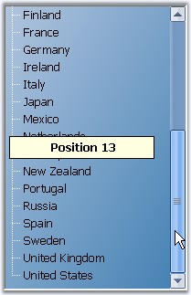
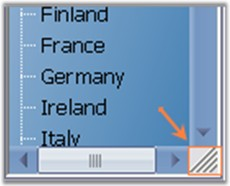

TreeViewAdv control provides scrollbar support to show additional content that is available but not visible by default. The following properties are supported by treeview scrolling.
Displaying ScrollTips
The text of the ScrollTip can be set through ScrollTipFormat property. It lets you identify the scroll position.
|
TreeViewAdv Properties |
Description |
|
HorizontalScrollTips |
Specifies if the control should display scrolltip when the user is dragging a horizontal scrollbar thumb. |
|
VerticalScrollTips |
Specifies if the control should display scrolltip when the user is dragging a vertical scrollbar thumb. |
|
HorizontalThumbTrack |
Specifies if the control should scroll together with scrollbar, when the user is dragging a horizontal scrollbar thumb. |
|
VerticalThumbTrack |
Specifies if the control should scroll together with the scrollbar, when the user is dragging a vertical scrollbar thumb. |
|
[C#]
this.treeViewAdv1.ScrollTipFormat = "Position {0}"; |
|
[VB.NET]
Me.treeViewAdv1.ScrollTipFormat = "Position {0}" |

Figure 1139: Scroll tip displaying Scroll Position
Scrolling using Mouse
The following properties support scrolling using mouse wheel.
|
TreeViewAdv Properties |
Description |
|
SmoothMouseWheelScrolling |
Lets you control the scrolling behavior when the user rolls the mouse wheel. |
|
MouseWheelScrollLine |
Specifies the value which controls the scrolling behavior, when the user rolls the mouse wheel. Default value is 3. |
|
EnableIntelliMouse |
Specifies whether scrolling is allowed using middle mouse button. |
|
AccelerateScrolling |
Specifies the acceleration behavior for scrollbars.
· Fast · Immediate · None · Default |
|
AllowIncreaseSmallChange |
When set to true, the scroll control can increase the scrollbar.smallchange property when doing accelerated scrolling. |
Sizing Grip for the Scrollbars
Setting the value for the SizeGripStyle property, will display a sizing grip at the bottom right corner of the control when both the scrollbars are visible. The options available are Show, which will show the sizing grip; Auto, which will automatically show the sizing grip whenever needed; Hide, which will hide the sizing grip.
|
TreeViewAdv Properties |
Description |
|
SizeGripStyle |
Specifies if the sizing grip should be drawn at the bottom right corner when both scrollbars are visible. The options are,
· Show - shows the sizing grip. · Auto - shows the sizing grip whenever needed. · Hide - Hides the sizing grip. |

Figure 1140: Scrollbars with Sizing Grip
Office2007 Look and Feel for ScrollBars
TreeViewAdv provides support for Office2007Scrollbars with all three color schemes.

Figure 1141: Office 2007 Scrollbars
Color schemes can be selected using Office2007ScrollBarsColorScheme property.
When the control is been used under a splitter window and if it is sharing the scrollbars with the parent control or the parent window, then setting FillSplitterPane property to true, will toggle support for doing that.
|
TreeViewAdv Properties |
Description |
|
FillSplitterPane |
Provides support for using the control inside dynamic splitter window and sharing the scrollbars with the parent window. |
|
[C#]
this.treeViewAdv1.AllowIncreaseSmallChange = true; this.treeViewAdv1.FillSplitterPane = true; |
|
[VB.NET]
Me.treeViewAdv1.AllowIncreaseSmallChange = True Me.treeViewAdv1.FillSplitterPane = True |
See Also